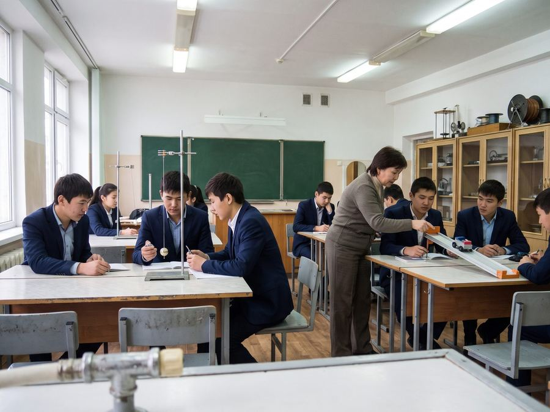
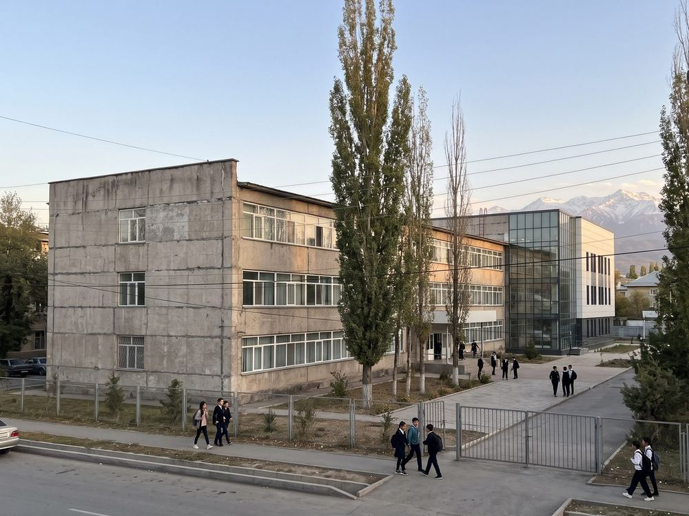

Where Irad's engineers and scientists begin
Since 1979 the Lyceum has taught physics and mathematics at the highest level in the country. Free for every pupil who passes the entrance test, with a boarding house for pupils from the districts.
Admission 2027 →About the LyceumNews
Life of the Lyceum

Team for the Zhautykov Olympiad chosen
Seven pupils of grades 10–12 will travel to Almaty in January for the Zhautykov International Olympiad in mathematics, physics and computer science.

Physics course for district teachers
In February the Lyceum will hold a two-week course for physics teachers of district schools who have no physics degree. Apply through your head of school.

Boarding house roof finished
The new roof of the boarding house is finished before winter, paid by the Lyceum Trust. Thank you to the class of 1996, who gave a third of the cost!
Why the Lyceum?
More than a school
Our pupils study physics and mathematics eight to ten hours a week, in classes of no more than 25, with teachers who are olympiad coaches and university lecturers. Lessons are in Iradi and English, so our graduates are ready for Talas State University and for universities abroad.
In 2026 our 55 graduates had the highest average in the National Graduation Test: 387 points out of 500 (results on e-Irad). 41 of them won state grant places at TSU and the Nurzhan Polytechnic; 9 study abroad.
“The Lyceum gave me the way of thinking. Everything else I learned later.”
— graduate of 1991, petroleum engineer, Houston
Our partners
The Lyceum is a state school. These friends make the difference.